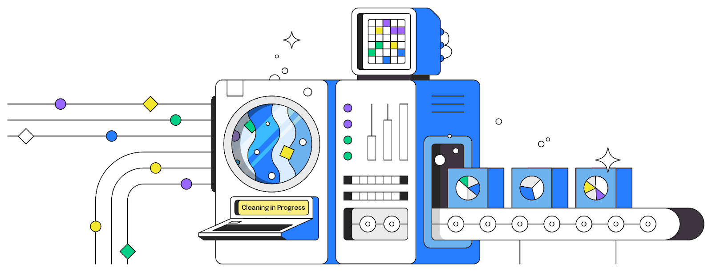
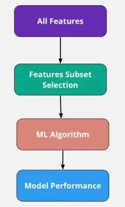

Chapter 1. Data Collection

On a sunny morning, a swarm of bees left their hive and began their day's work. They fly to flower fields in search of the sweetest nectar. Each bee has its own task, some are responsible for finding nectar, and some are responsible for telling other bees where to find nectar. These industrious little creatures are constantly flying from flower to flower, collecting every drop of precious nectar. Nectar is not only their food source but also the raw material from which they make honey. Through this collaboration, bees are able to efficiently collect large amounts of nectar, ensuring that the needs of the entire hive are met.
This pattern of bee behavior bears striking similarities to the data collection process in machine learning. In machine learning, data collection is the first step in the process. Just like bees collecting nectar, we need to collect data from a variety of sources. These sources can be databases, APIs, file systems, or even real-time data streams. We need to ensure that the data collected is diverse and comprehensive so that subsequent model training can have enough information to learn and predict.
For example, when we want to train an image classification model, we need to collect a large amount of image data. These images may come from the Internet, captured by a camera, or from an existing image database. We need to ensure that these image data cover a variety of different categories and scenarios so that the model can learn to distinguish different image features. Just like bees flying between different flowers, we also need to switch between different data sources to collect as much useful data as possible.
In summary, data collection is as fundamental to machine learning as nectar is to honey. Through efficient data collection, we are able to provide enough "nourishment" for the models to help them learn and predict better.
Chapter 2. Data Cleaning
When bees choose nectar, they don't use all of it directly to make honey. Instead, they sift and filter this nectar to ensure only the best parts are used. Bees discard nectar that is mixed with impurities or of poor quality, leaving only pure, nutritious nectar. This process is crucial to the quality of honey.
This is very similar to the data cleaning process in machine learning. After data collection, we usually get a large batch of raw data. This data can contain a variety of issues such as missing values, duplicate data, outliers, or erroneous data. If we directly use these unprocessed data for model training, the performance of the model will be seriously affected. Therefore, we need to clean and process the data.
The first step in data cleaning is to identify and handle missing values. We can handle missing values using a variety of methods, such as deleting records containing missing values, filling missing values with the mean or median, or using more complex interpolation methods. Next, we need to remove or correct duplicate and erroneous data to ensure data accuracy and consistency.
Another important step is handling outliers. These outliers may be due to data entry errors, sensor failure, or other reasons. We can use statistical methods or machine learning algorithms to identify and handle these outliers to ensure the overall quality of the data.
Just like bees carefully sifting through nectar to ensure the quality of the honey, data cleaning is a crucial step in the machine learning process. Through effective data cleaning, we can provide high-quality training data for the model, thereby improving the performance and accuracy of the model.
Chapter 3. Feature Selection
In the world of bees, finding the sweetest nectar is a crucial task. After the initial screening in the previous step, the bees select flowers that are most likely to be rich in nectar based on characteristics such as color, shape, and scent. This process is a vivid metaphor for feature selection.
Feature selection is equally important in machine learning. When we face large and complex data sets, not all features (variables) contribute to the performance of the model. Some features may be redundant, and some may even introduce noise, affecting the accuracy and efficiency of the model. Therefore, the goal of feature selection is to select the most useful parts from many features to improve the performance of the model.
The feature selection process can be divided into the following steps:
1.Feature evaluation:
First, we need to evaluate the importance of each feature to the target variable (predictor variable). This can be achieved through statistical methods, correlation analysis, information gain and other means. Just as bees judge the richness of nectar by perceiving the characteristics of a flower, we judge the usefulness of each characteristic by calculating its importance score.
2.Feature filter:
After the evaluation is complete, we need to filter out those features with higher importance scores. These features will be retained, while features with lower scores will be eliminated. This process helps reduce the dimensionality of the data, reduce model complexity, and improve training efficiency.
3.Feature combination:
Sometimes, a single feature may not be enough to provide enough information, but the combination of multiple features can significantly improve the performance of the model. We can use feature engineering to combine some original features to generate new features, thereby improving the predictive ability of the model.
4.Repeated verification:
Feature selection is an iterative process. We need to continuously train the model, evaluate the model performance, and adjust the feature selection strategy based on the results. Through continuous iteration, we can gradually optimize the feature set to achieve the best performance of the model.
Feature selection is not only a technical process, but also an art that requires experience and intuition. Just like bees shuttle among flowers and find the best flowers based on experience, data scientists also need to find the most valuable features in large amounts of data to lay the foundation for the success of the model.
Chapter 4. Model Training

In the intricate of nature, bees play a crucial role in the ecosystem by pollinating flowers and collecting nectar. Imagine bees setting off on their daily journey, flying out of their hive with a purpose. They don’t just visit flowers at random. They remember which flowers were rewarding from previous trips and learn from the dances of other bees, which point them to the richest nectar sources. This learning process is iterative and continuously improves their efficiency.
Model training in machine learning follows a similar path. The process begins with feeding the collected data into the model. Just as bees start their day by flying out to flowers, the model starts its training by processing the input data. The quality and quantity of this data significantly impact the model’s ability to learn effectively.
As bees visit different flowers and gather nectar, they learn which flowers are more rewarding. Similarly, during model training, the algorithm learns from the data by adjusting its internal parameters. This learning is guided by an optimization algorithm that minimizes errors and improves accuracy.
Bees often revisit flowers that previously provided a good source of nectar, using their memory and the feedback from other bees. In machine learning, this is akin to the iterative nature of training, where the model repeatedly adjusts its parameters based on feedback from the data. Each iteration aims to reduce the error and improve the model’s predictions.
Just as bees might occasionally explore new flowers to validate their sources of nectar, models are validated against a separate set of data not used in training. This validation helps ensure that the model generalizes well to new, unseen data, much like how bees ensure they are not overly dependent on a single nectar source.
Bees optimize their foraging routes to maximize nectar collection with minimal energy expenditure. In machine learning, optimization algorithms fine-tune the model’s parameters to achieve the best performance. Techniques like gradient descent are used to find the optimal settings that minimize prediction errors.
Over time, bees establish efficient routes and reliable sources of nectar. Similarly, a machine learning model converges to a state where further training yields minimal improvements. At this point, the model is considered well-trained and ready for deployment.
Chapter 5. Model Evaluation
In the world of bees, evaluating the success of their nectar-gathering efforts is crucial. After a day of foraging, bees return to the hive。 They will collectively evaluate this information to decide which foraging paths are worth pursuing further. This process of assessment and feedback ensures the bees' foraging efficiency improves over time.
Similarly, in machine learning, model evaluation is a critical step to assess how well the model has learned from the data. After training a model, we need to evaluate its performance using a separate set of data that was not used during training. This helps us understand how well the model generalizes to new, unseen data. Key metrics such as accuracy, precision, recall, and F1 score are used to quantify the model's performance.
Model evaluation involves comparing the predicted outputs with the actual outcomes. This comparison highlights any discrepancies and allows us to measure the model's effectiveness. Just as bees adjust their foraging strategies based on the evaluation of nectar quality, machine learning models can be tuned and improved based on evaluation results. Through continuous evaluation and refinement, we ensure that our models remain robust and accurate in real-world applications.
Chapter 6. Prediction and Deployment
At the end, the bees use the experience gathered to predict the best flowers and nectar sources. In this way, the bees can effectively navigate to the most promising flowers, ensuring the survival and prosperity of the hive.
Similarly, in machine learning, the prediction and deployment phases are where the trained and evaluated models are put to real-world use. After thorough training and rigorous evaluation, the model is ready to make predictions on new data. Deployment involves integrating the model into a production environment where it can process live data and provide real-time insights or decisions.
The prediction process uses the patterns and relationships learned during training to generate outputs for new inputs. Deployment ensures that the model operates effectively in a real-world environment and continues to learn and adapt as it encounters new data. Just like a bee dynamically adjusts its foraging route based on real-time feedback.